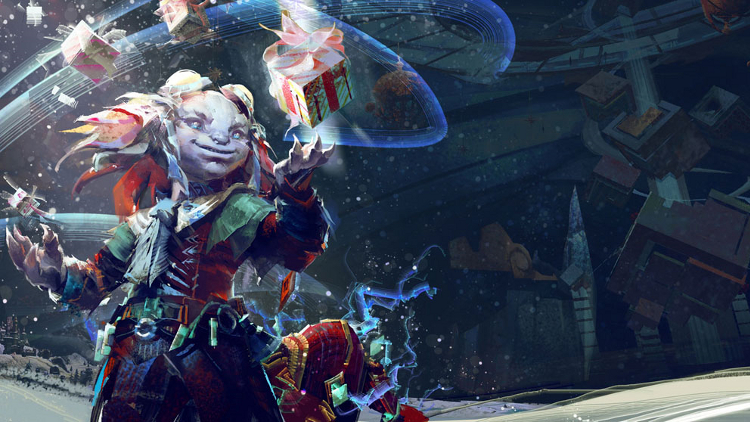

11.12.2018
Newsy | Eventy Cykliczne
A Very Merry Wintersday 2018
Już od dziś możemy ponownie cieszyć się powracającym eventem Wintersday. Powracają aktywności znane z poprzednich lat takie jak:
- Tixx's Infinirarium - świąteczny mini dungeon, w którym w serii eventów pomagamy naprawiać (poprzez ich totalną demolkę) wadliwe zabawki wyprodukowane przez Tixxa.
- Winter Wonderland - świąteczny jumping puzzle o trzech poziomach trudności, a także okazja do farmienia prezentów, które następnie możemy (licząc na łut szczęścia) otworzyć, lub sprzedać i cieszyć się zarobionymi pieniędzmi.
- Bell Choir Ensemble - gratka dla muzycznie uzdolnionych graczy. Mini zawody, w trakcie których możemy przygrywać na dzwonkach chromatycznych rozmaite świąteczne utwory rodem z Tyrii.
- Toypocalypse- świąteczny mini dungeon w stylu tzw. "Tower Defense", w którym bronimy dolyaków (poprzez konstruowanie rozmaitych struktur) przed coraz liczniejszymi falami wadliwych zabawek wyprodukowanych przez Tixxa
- Snowball Mayhem - świąteczne (uproszczone) PvP w stylu paintballowego "Capture the Flag". Dla tych, którzy od rywalizacji muzycznej wolą naparzanie się śnieżkami.
- Ho-Ho-Tron Donation oraz Donation Drive - mini event, będący lekkim cash-sinkiem, w którym wspomagamy potrzebujących wpłacając golda, a w zamian otrzymując podarunki
- Warming Grawnk's Heart - seria mini scavenger huntu, w którym przywracamy świątecznego ducha i rozgrzewamy (pikantnym jedzeniem oczywiście) serducho grawla.
- Food donation - mini event, w którym możemy wspomóc uchodźców w Amnoon oddając część zdobytego z prezentów świątecznego jedzenia.
- Food donation - mini event, w którym możemy wspomóc uchodźców w Amnoon oddając część zdobytego z prezentów świątecznego jedzenia.
- Mount race - wyścigi podobne do tych, którymi w październiku cieszyliśmy się przy okazji Halloween. Dla graczy bez PoF oczywiście jest możliwość wypożyczenia mounta. W święta nikt nie może być przecież odtrącony.
- Prezenty dla sierotek - daily activity, w którym wręczamy prezenty sierotkom, dzięki czemu dostajemy karmę (jako, że prezenty kupujemy również za karmę śmiało można powiedzieć, że "karma wraca", oczywiście w większej ilości). Celem maksymalizacji zysków warto użyć wszystkie dostępne boosty zwiększające karmę.
Z nie-całkiem-nowych-nowości pojawi się po raz pierwszy od czasu oryginalnego Guild Wars'a dungeon Secret Lair fo the Snowman. Będzie to aktywność o umiarkowanym poziomie trudności, wymagająca złożenia składu w stylu raidowy, tj. składającego się z 10 osób, jednak bez przesadnych wymogów jeśli chodzi o team composition i wymagania wobec poszczególnych osób.
A poniżej medley wykonany z oficjalnego soundtracku.
Dodatkowo jako bonus mogę dodać, że wciąż trwa giveaway na AlienWare Arena, w ramach którego po zarejestrowaniu się możemy uzyskać skin czapki św. Mikołaja. Klik klik tutaj. A oto krótka instrukcja jak aktywować kod w grze:
- Zaloguj się do gry i wybierz dowolną postać
- Wciśni "O", a następnie umiejscowiony w lewym górnym rogu napis "Redeem Code".
- Poniżej pola do wpisania kodu kliknij "Redeem Item Code".
- Wpisz kod w pole "Enter your code".
- Wciśnij "Redeem" aby potwierdzić.
- Enjoy!